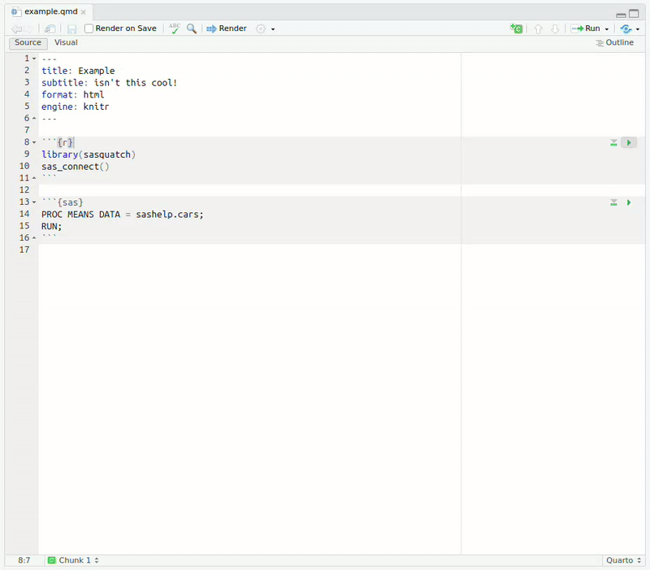
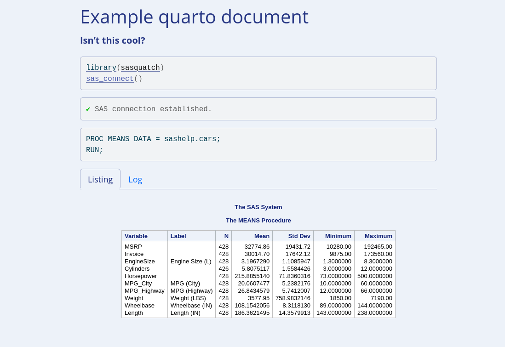

Use SAS, R, and Quarto Together
sasquatch allows you to combine the power of R, SAS, and quarto together to create reproducible multilingual reports. sasquatch can:
- Run SAS code blocks interactively
- Send data back and forth between SAS and R
- Conduct basic file management on a SAS client
- Render html or latex SAS output within quarto/rmarkdown documents.
Installation
Package installation
You can install the development version of sasquatch like so:
install.packages(
"sasquatch",
repos = c('https://ropensci.r-universe.dev', 'https://cloud.r-project.org')
)
# or
# install.packages("pak")
pak::pkg_install("ropensci/sasquatch")Python installation
Make sure Python is installed on your system. If Python has not been installed, you can install Python like so:
reticulate::install_python()or download the installer from the Python Software Foundation.
SASPy installation
To install the SASPy package and its dependencies within a Python virtual environment:
sasquatch::install_saspy()Configuration
Configuration for SAS can vary greatly based on your computer’s operating system and the SAS platform you wish to connect to. For more information check out vignette("configuration").
Don’t have a SAS license currently or just want to get set up quickly? Configure sasquatch for SAS On Demand for Academics using the steps below:
Registration
SAS On Demand for Academics (ODA) is free SAS client for professors, students, and independent learners. Create an account at https://welcome.oda.sas.com/.
Once you have set up your account, log in and note the ODA server (in the picture below United States 2) and your username (under the email in the profile dropdown). We will need these for later.

Java installation
ODA relies on the IOM access method, which requires Java. Make sure Java is installed on your system. You can download Java from their website. Note the Java installation path.
ODA Configuration
Set up for ODA is super easy. Run config_saspy() and follow the prompts (you may need to recall your username, server, and java installation path from earlier).
sasquatch::configure_saspy(template = "oda")config_saspy(template = "oda") will create a sascfg_personal.py file with all the relevant configuration information and create an authinfo file, which will store your ODA credentials. More information about ODA configuration can be found in the ODA section of SASPy configuration documentation.
Usage
Once you have setup SASPy and connected to the right python environment using reticulate (if necessary), you can create a quarto document like any other, call sas_connect(), and just get going!
Code blocks
Now, you should be able to run SAS code blocks in RStudio like any other.

Quarto document contents within the picture:
Sending output to viewer
If you want to send the SAS output to the viewer, you can utilize the sas_run_selected() addin with a custom shortcut.

Or with a keyboard shortcut in Positron.
Converting tables
Pass tables between R and SAS with sas_from_r() and sas_to_r().
sas_from_r(warpbreaks, "warpbreaks")
sas_cars <- sas_to_r("cars", libref = "sashelp")Rendering quarto/rmarkdown documents
And of course, render beautiful HTML or latex quarto/rmarkdown documents in the same style you would expect from SAS with the sas_engine().

Comparison with similar packages
sasquatch relies on the SASPy Python package and the reticulate R package to interoperate with Python. There exist similar packages, which work similarly to achieve related goals.
-
sasrworks identically tosasquatchrelying on theSASPyPython package to interface with SAS, but does not include any interactive, file management, or quarto functionality.
- Like
sasrandsasquatch,configSASrelies on theSASPyPython package, but it primarily focuses on solely onknitrengine support. - The
configSASengine HTML output CSS styles interfere with the rest of the document and SAS code output is not contained within a code block. -
configSASis not actively maintained.
-
SASmarkdowndoes not rely on theSASPyPython package and thus is fairly simple to set up; however, it does require a SAS executable to be installed on the same machine as R. - In contrast,
SASPy-reliant packages can interface with both local and remote SAS installations and can easily pass data between R and SAS without the need for intermediate files.
sasquatch may be beneficial to you if you…
- Rely on a remote SAS client
- Desire interactive SAS functionality while developing
- Require remote SAS file management
- Would like to be able to easily send data back and forth between SAS and R
without the use of intermediate files
Contributing
Please note that this package is released with a Contributor Code of Conduct. By contributing to this project, you agree to abide by its terms.